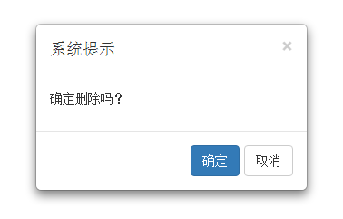
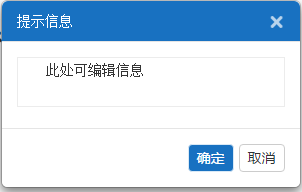

ip.js中的公共方法说明
获取页面公共参数
关联关系函数 参数1：要素字段 参数2：coa的id 参数3：要素关联关系 参数4：0（单选树） 1（复选树） 参数5：区域id 参数6：1表格内使用，传入当前表格的viewModel；2其他场景使用，传入{} 参数7：1录入区域使用，传入当前字段名称；2、其他场景使用，请传入0 参数8：1录入区域使用，基于关联关系，数据源细化前缀；2其他场景使用，不需传入 例：
传递资源数据，根据data[i].flag资源标识为1或0来判断是否在页面中显示该资源
确认消息弹框 参数1：提示消息文字 参数2：确定按钮id 参数3：取消按钮class 参数4：是否仅仅显示确定按钮 1、viewModel.warnJump=function(){ warnJumpMsg("确定删除吗？",0,0,true); } 2、 warnJumpMsg("确定删除吗？","sid","cCla"); “确定”按钮的逻辑代码 $("#sid").on("click",function(){ alert("删除成功！"); }); “取消” 按钮，关闭消息提示 $(".cCla").on("click",function(){ $("#config-modal").remove(); }) 运行效果截图 
确认消息弹框 参数1：弹窗标题 参数2：可编辑的提示消息文字 参数3：确定按钮id 参数4：取消按钮class 参数5：是否仅仅显示确定按钮 1、viewModel.warnJumpSys=function(){ ip.warnJumpMsgSys("提示信息","确定删除吗？",0,0,true); } 2、 ip.warnJumpMsgSys("提示信息","此处可编辑信息","sidsys","cClasys"); “确定”按钮的逻辑代码 $("#sidsys").on("click",function(){ alert($("#msg-notice-sys").val()); alert("删除成功！"); }); “取消” 按钮，关闭消息提示 $(".cClasys").on("click",function(){ $("#config-modal-sys").remove(); }) 运行效果截图 
获取url中的参数 例如：var menuid = ip.getUrlParameter("menuid");
获取当前用户的tokenid return String
提示消息 4000毫秒之后消失 参数1：提示消息文字 参数2:flag有三种值： 1、success 成功 2、error 错误 3、info 提示信息 运行效果截图
处理千分位 例如：var demo_value = ip.dealThousands("123456.789") //123,456.79
表格内处理千分位,grid的editType方法使用 参数1：input的id 参数2：grid的datatable 参数3：选中的字段(obj.firld)
动态创建grid表格 参数1：视图的id 参数2：grid放置的页面区域的id 参数3：请求grid中的数据的url地址 参数4：获取数据时的参数例如{"mame":"name1"} 参数5：flag: 0 页面初始化不加载数据，1 页面初始化加载数据 参数6：操作列显示与否 true(默认) or false 参数7：多选框列显示与否 true(默认) or false return: 返回一个viewModel 例如：viewModel = createGrid(viewid, 'grid-area', url, {}, 1,true,"true");
为表格grid填充数据 参数1：调用createGrid返回的viewModel 参数2：获取表格json数据的url 参数3：获取表格json数据的时所需参数
数据加载过渡，加载中。。。 参数1：传值true/false 控制loading显示与隐藏
创建编辑区域或者搜索条件区域 参数1：areaType编辑或者搜索 取值为（edit 或者 search） 参数2：viewId 视图id 参数3：areaId视图区域的id
获取创建编辑区域或者搜索条件区域填入的值 参数1：调用ip.createArea() 返回的值
清除录入区域填入的值 参数1：input的id
金额框js逻辑 参数1：金额框id
辅助录入树的弹窗 参数1：目标输入框的id 参数2：要素的标识 例如RZ 参数3:树是否为单选还是多选树的标识，0为单选，1为复选 参数4:当表格中使用辅助录入树时传入表格声明时的viewModel，或自动生成表格时返回的viewModel，其他地方使用传递为空对象 参数5:可以为空，但是当为自动生成的表格使用辅助录入树时， 参数6:辅助录入的弹窗的标题
获取辅助录入数选中的值 参数1：要素标示 参数1：输入框id 参数1：输入框-h的值